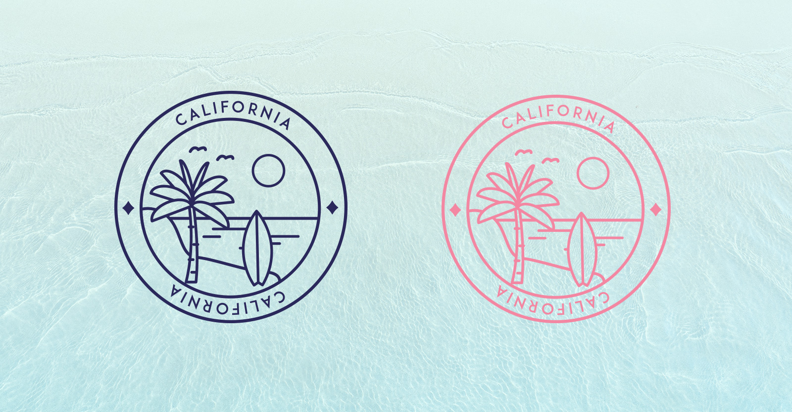
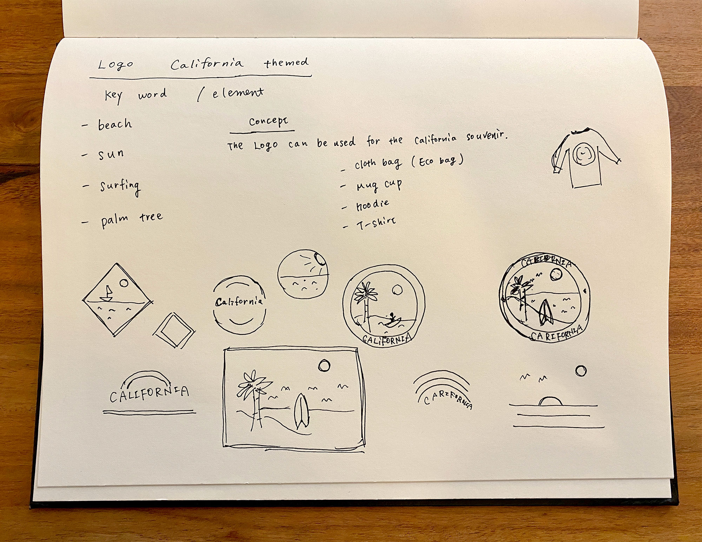
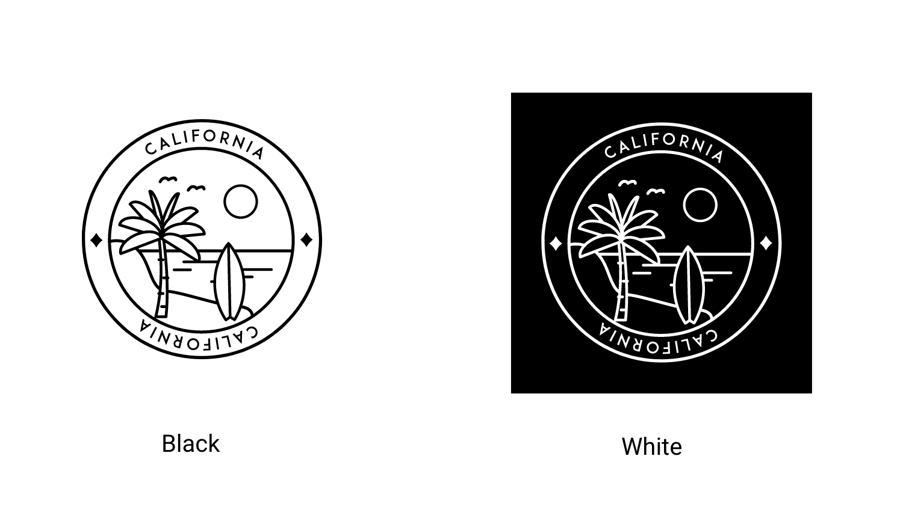
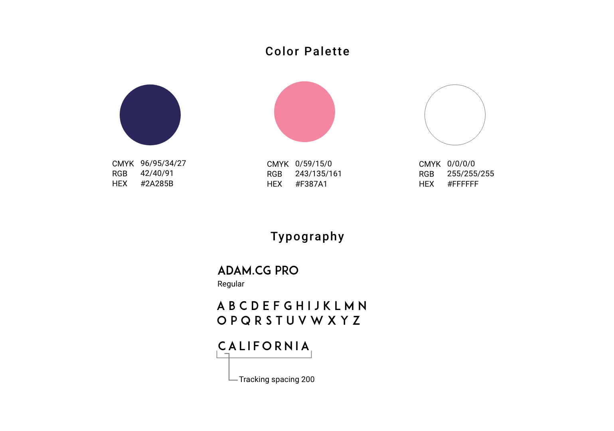

This is originally started from one of my “Daily UI” projects and expanded to a California themed logo project. The concept of this logo can be used for the California souvenirs like hoodies, mugs, and eco-bags. Those souvenirs are not only for memorable things from the California trip but also for everyday use.
I listed up the keywords that are possible to use for the logo components. The inspiration comes from the sunset of a Californian beach. People are getting back from surfing, the sunset beach is surrounded by happy and relaxing people. I picked the keywords beach, sun, surfing, palm tree, and birds. To find a direction, I tried sketching different variations.
I made a black and white version of the logo before adding color. It helps me to focus on the design before moving to color.
I choose navy blue, pink and white to start. Navy is neutral and pink is a softer color, while white is good with almost any darker background. The font is ADAM CG PRO which gives a modern, relaxed and maybe a bit hipster look.
PROJECT: Personal
YEAR: 2019
ROLE: Design
BY: Illustrator, Photoshop